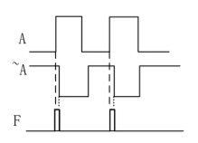
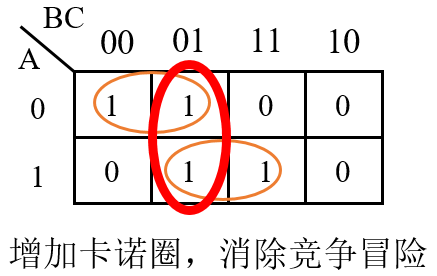

Keywords: Competition, Hazard, coding standards
Causes
In digital circuits, signal transmission and state transitions both have certain delays.
- In combinational logic circuits, when input signal changes along different paths propagate to the same gate-level circuit point, they do so earlier or later in time. This time difference caused by the order is called Competition.
- Due to the existence of competition, the output signal needs some time to reach the expected state. During the transition period, momentary erroneous outputs such as spike pulses may occur. This phenomenon is called Hazard.
- Competition does not necessarily lead to Hazard, but Hazard always involves Competition. For example, for the given logicF = A & A', the circuit is shown in the lower left figure.
Due to the presence of the inverter circuit, the signalA'propagation time to the AND gate input, relative to the signalAwill lag, which may cause the final AND gate output resultFto have a glitch pulse. As shown in the lower right figure.


In fact, in actual hardware circuits, as long as the delays at the inputs of a gate circuit are different, competition and hazard may occur.
For example, for a simple AND gate, if the input signal sources are not necessarily generated by the same signal transition, competition and hazard may also occur due to hardware process and other delay circuits, as shown in the figure below.

Judgment Methods
Algebraic method
In a logic expression, keep one variable fixed, replace all other remaining variables with 0 or 1. If the final logic expression can be simplified to
Y = A + A'
或
Y = A · A'
in the form, then it can be determined that this logic has competition and hazard.
For example, the logic expressionY = AB + A'C, under the condition ofB=C=1the expression can be simplified toY = A + A'. Obviously,Athe change of state will inevitably cause the circuit to have competition and hazard.
Karnaugh map method
When there are two tangent Karnaugh loops, and the tangent point is not surrounded by other Karnaugh loops, competition and hazard may occur.
For example, the lower left figure has competition and hazard, while the lower right figure does not.

In fact, a Karnaugh map is essentially an analysis of the logic expression, but it allows intuitive judgment.
For example, the logic expression in the upper left figure can be simplified toY = A'B' + AC, whenB=0 且 C=1this logic expression can also be expressed asY = A' + A. Therefore, competition and hazard definitely exist.
The logic expression in the upper right figure can be simplified toY = A'B' + AB, obviouslyBwhether it equals1or0, this expression will never simplify toY = A' + A. Therefore, this logic has no competition and hazard.
It should be noted that the Karnaugh map has wrap-around adjacency. As shown in the figure below, although it seems that the two Karnaugh loops are not tangent, in fact, m6 and m4 are also adjacent, so the digital logic represented by the Karnaugh map below will also produce competition and hazard.

For other more complex cases, methods such as "computer-aided analysis + experiment" may be needed.
Elimination Methods
For digital circuits, there are mainly 4 common methods to avoid competition and hazard.
1) Add a filter capacitor to filter out narrow pulses
This method requires connecting a small capacitor in parallel at the output to attenuate the amplitude of the spike pulse below the threshold of the gate circuit.
Although this method is simple, it increases the transition time of the output voltage and can easily damage the waveform.
2) Modify the logic to add redundant terms
Using the Karnaugh map, add a Karnaugh loop between the two tangent circles and include it in the logic expression.
As shown in the figure below, for the digital logicY = A'B' + ACadd the redundant termB'C, the circuit logic can then be expressed asY = A'B' + AC + B'C. At this point, the circuit will no longer have competition and hazard.

3) Use a clock-synchronized circuit and utilize flip-flops for cycle delay
In synchronous circuits, signal changes occur at the clock edge. For the D input of a flip-flop, as long as a glitch does not appear at the rising edge of the clock and does not satisfy the data setup and hold times, it will not harm the system. Therefore, the D input of a D flip-flop can be considered insensitive to glitches. Using this characteristic, delaying a combinational logic signal by clock cycles under the clock edge drive can eliminate competition and hazard.
Delaying by one clock cycle will reduce the occurrence of competition and hazard with a certain probability. Experiments show that the safest cycle-delay period is 3 clock cycles, which can effectively reduce the occurrence of competition and hazard.
Of course, ultimately you still need to apply a reasonable cycle delay to the signals according to your design requirements.
To illustrate that applying a cycle delay to signals can eliminate competition and hazard, we build the following code model.
Example
(
input clk ,
input rstn ,
input en ,
input din_rvs ,
output reg flag
);
wire condition = din_rvs & en ; //combination logic
always @(posedge clk or negedge !rstn) begin
if (!rstn) begin
flag <= 1'b0 ;
end
else begin
flag <= condition ;
end
end
endmodule
The testbench is described as follows:
Example
module test ;
reg clk, rstn ;
reg en ;
reg din_rvs ;
wire flag_safe, flag_dgs ;
//clock and rstn generating
initial begin
rstn = 1'b0 ;
clk = 1'b0 ;
#5 rstn = 1'b1 ;
forever begin
#5 clk = ~clk ;
end
end
initial begin
en = 1'b0 ;
din_rvs = 1'b1 ;
#19 ; en = 1'b1 ;
#1 ; din_rvs = 1'b0 ;
end
competition_hazard u_dgs
(
.clk (clk ),
.rstn (rstn ),
.en (en ),
.din_rvs (din_rvs ),
.flag (flag_dgs ));
initial begin
forever begin
#100;
if ($time >= 1000) $finish ;
end
end
endmodule // test
The simulation results are as follows:
As can be seen from the figure, a spike pulse appears on signal condition. This is because signal din_rvs and signal en are both asynchronous with respect to the module's internal clock, so their delays when reaching the internal gate circuit are different, which may cause competition and hazard.
Although the final simulation result flag is always 0, which seems to be the result we want, in an actual circuit this spike pulse is very close to the clock edge in time, so it may be captured by the clock and produce a wrong result.

Next, we improve the model by adding cycle-delay logic, as follows:
Example
(
input clk ,
input rstn ,
input en ,
input din_rvs ,
output reg flag
);
reg din_rvs_r ;
reg en_r ;
always @(posedge clk or !rstn) begin
if (!rstn) begin
din_rvs_r <= 1'b0 ;
en_r <= 1'b0 ;
end
else begin
din_rvs_r <= din_rvs ;
en_r <= en ;
end
end
wire condition = din_rvs_r & en_r ;
always @(posedge clk or negedge !rstn) begin
if (!rstn) begin
flag <= 1'b0 ;
end
else begin
flag <= condition ;
end
end // always @ (posedge clk or negedge !rstn)
endmodule
Instantiate this module into the above testbench and the following simulation results are obtained.
As can be seen from the figure, signal condition is no longer disturbed by spike pulses, and flag is 0 in the simulation results, as expected.
In fact, when the input signal is very close to the clock edge, the clock sampling of the input signal is still uncertain, but spike pulses will not occur. Delaying the input signal by 2 more clock cycles is a better approach and provides better suppression of competition and hazard.

4) Use a Gray code counter
For an incrementing multi-bit counter, the count value sometimes has multiple bit transitions.
For example, when the counter variable counter counts from 5 to 6, the corresponding binary numbers transition from 4'b101 to 4'b110. Due to the delay of each bit, the transition process of counter may be:4'b101 -> 4'b111 -> 4'b110. If there is the following logic description, signal cout may have a brief spike pulse, which is obviously contrary to the design.
cout = counter[3:0] == 4'd7 ;
The Gray code counter, on the other hand, has only one data bit changing between adjacent count values, so it can effectively avoid competition and hazard.
Fortunately, in Verilog designs, counters are mostly synchronous designs. Even if there is a possibility that multiple bits flip simultaneously during counting, under the action of clock-driven flip-flops, as long as the timing requirements between signals are met, 100% of competition and hazard can be eliminated.
Summary
Generally speaking, adding filter capacitors and logic redundancy to eliminate competition and hazard are not considerations in Verilog design.
Using Gray code counters for counting is mostly applied in high-speed clock scenarios to reduce signal toggle rate and thus reduce power consumption.
Using flip-flops to delay asynchronous signals by clock cycles in a clock-synchronized circuit is a commonly used method in Verilog design.
In addition, to eliminate competition and hazard, there are some issues to pay attention to in Verilog coding; see the next subsection for details.
Verilog Coding Standards
Paying more attention to the following points during programming can also avoid most competition and hazard problems.
- 1) When modeling sequential circuits, use non-blocking assignments.
- 2) When modeling combinational logic, use blocking assignments.
- 3) When modeling sequential and combinational logic in the same always block, use non-blocking assignments.
- 4) Do not use both blocking and non-blocking assignments in the same always block.
- 5) Do not assign the same variable in multiple always blocks.
- 6) Avoid generating latches.
Below, we analyze the above precautions one by one.
1) When modeling sequential circuits, use non-blocking assignments
Earlier, when discussing non-blocking assignment, it was stated that in sequential circuits, non-blocking assignment can eliminate race conditions.
For example, as described in the following code, because the order of blocking assignments to a and b cannot be determined, race conditions may occur.
always @(posedge clk) begin
a = b ;
b = a ;
end
When non-blocking assignment is used, the assignment operations are performed simultaneously, so race conditions are not introduced, as described in the following code.
always @(posedge clk) begin
a <= b ;
b <= a ;
end
2) When modeling combinational logic, use blocking assignments
For example, if we want to implement the combinational logic functions C = A&B, F = C&D, the non-blocking assignment statements are as follows.Both assignment statements assign simultaneously. In F <= C & D, the old value of signal C is used, so the logic at this time is wrong; the logic value of F is not equal to A&B&D.
Moreover, signal C is required to have storage capability, but it is not clock-driven, so C may be synthesized into a latch, causing race conditions.
always @(*) begin
C <= A & B ;
F <= C & D ;
end
Modify the code as follows. The operation F = C & D must be after C = A & B; at this time, the logic value of F is equal to A&B&D, which conforms to the design.
always @(*) begin
C = A & B ;
F = C & D ;
end
3) When modeling sequential and combinational logic in the same always block, use non-blocking assignments
Although sequential circuits may involve combinational logic, if non-blocking assignment is used for assignment operations, similar problems as mentioned in rule 1 can still occur.
For example, to implement the logic function of an AND gate under clock drive, refer to the code below.
Example
if (!rst_n) begin
q <= 1'b0;
end
else begin
q <= a & b; //Even if there is combinational logic, do not write it as: q = a & b
end
end
4) Do not use both blocking and non-blocking assignments in the same always block
When the combinational logic in an always block contains both blocking and non-blocking assignments, unexpected results may occur, as described in the following code.
At this point, after signal C completes blocking assignment, signal F is assigned with non-blocking assignment; the simulation result may be correct.
However, if signal F has other loads, the latest value of F cannot be passed immediately; the valid time of the data is still at the next trigger edge. At this time, F is required to have storage capability and may be synthesized into a latch, causing race conditions.
always @(*) begin
C = A & B ;
F <= C & D ;
end
As described in the code below, from a simulation perspective, signal C is assigned with non-blocking assignment and becomes valid only at the next trigger edge. Although F = C & D is a blocking assignment, signal C is not a blocking assignment, so the logic of F still uses the old value of C.
always @(*) begin
C <= A & B ;
F = C & D ;
endNow let's analyze what would happen if a sequential circuit contains both blocking and non-blocking assignments, as shown in the code below.
If the reset is synchronous with the clock, then signal q being 0 due to reset becomes valid only in the next clock cycle.
If q becomes 0 due to signals a or b, it is valid in the current clock cycle.
If q has other loads, the timing of q will be particularly chaotic, which obviously does not meet design requirements.
Example
if (!rst_n) begin //Assume reset is synchronous with clock
q <= 1'b0;
end
else begin
q = a & b;
end
end
It should be noted that many compilers support this writing style, and the above analysis is based on simulation. In practice, if blocking and non-blocking assignments are mixed, the timing of the synthesized circuit will be disordered, which is not conducive to analysis and debugging.
5) Do not assign the same variable in multiple always blocks
Unlike C language, Verilog does not allow assigning to the same variable in multiple always blocks. At this time, the signal has multiple drivers, which is prohibited. Of course, assign statements are also not allowed to assign to the same variable multiple times for connection. From the signal perspective, with multiple drivers, the same signal variable is assigned different values multiple times in a very short period, which may cause race conditions.
From a syntax perspective, many compilers will also report an Error when they detect multiple drivers.
6) Avoid generating latches
For detailed analysis, see the next chapter:《Avoid Latch》。
Click me to share notes
<p style="font-size:14px;">Notes must be an extension of the content of this article!</p><br> <p style="font-size:12px;"><a href="../tougao.html" target="_blank">Article submission, click here</a></p> <p style="font-size:14px;"><a href="./runoob-user-test-intro.html" target="_blank">How to get registration invite code</a></p> <h3 class="text-muted"><i class="fa fa-info-circle" aria-hidden="true"></i> You must <a href=".." class="runoob-pop">log in</a> before sharing notes!</h3> <p><a href="./runoob-user-test-intro.html" target="_blank">How to get registration invite code</a></p>